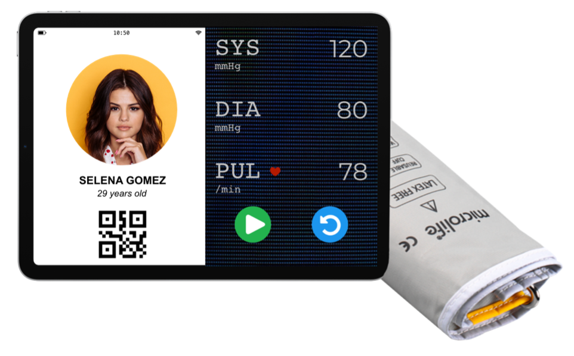

Project Idea
Overview
If it is possible, I would like to call this idea “Health Care”. This program will help users monitor their health from reports via index on the sphygmomanometer or identifying the face expression. The sphygmomanometer is designed to look like a tablet device.
Indexes will be updated day by day on the system. Users basically use a tablet and a computer having webcam, laptop or smartphone. When they access to our websites, through the camera and A.I technologies, the system will predict user’s status via their face expression and emotion. Next, we will use chatbot to communicate with user to get more accurate. After that, the system will suggest some advice before they can visit doctor. Also, they can bring the reports which they monitor at home to hospitals. It not only help user can know their health but also support doctors to find out the treatment way faster.
Motivation
The definition of “health” is when the state of the human is the most comfortable and there would be no sickness or pain. Many experts recommend that if someone hopes to have a good health condition, they should periodically visit their doctor for checkups. Taking care of our health everyday might contribute to protecting yourself, your family or even the society against risk factors for disease.
In the Covid-19 pandemic today, the medicine industry has terribly faced a range of challenges due to the epidemic. Hence, the health issue is a priority at the moment. Some countries still have a lockdown directive, citizens will be restricted going outside when the situation is not extremely necessary. During the lockdown period, people stay at home, why not take care of our health care and monitor our vitals right now? According to the statistics via Google Trends, since early 2021, the phrase “self-care” has been searched on the website that slightly increased.


From separate countries, for instance, the Philippines stand on the top of countries where people concern about this topic.

In Australia, the data is updated from big cities which have a lot of traffic on sites.

Most people do not care about their health because they think they have no symptoms at all. They will begin to concern their health when symptoms gradually appear. As a result, it may lead to bad consequences which are difficult to treat. According to NIH website of the US, I realise the importance of blood pressure. The author of this article said that high blood pressure is a “silent killer” which meaned very dangerous.
In numerous diseases, whether it is hypotension or hypertension, doctors state that is the main reason relating to the death cases. In addition to periodically visiting the doctor, the family should equip a sphygmomanometer which measures blood pressure. It helps people control the unexpected up and down and might be able to avoid jeopardy. Since someone monitors their health frequently, they will not feel worried due to diseases. Moreover, they will get motivated to control their blood pressure with a balanced diet, physical and using medicine in the right way.
Description
1. Functions in Health Care system
Function 1: Measuring blood pressure
On a tablet, when a user is using it for the first time, the system will require you to type some personal information. The system will store that information to accompany health data to monitor user health. After measuring, it will show three indexes which are systolic, diastolic, and pulse. Each user will possess one QR code which links to their personal site on our system. We are proposing that each equipment include 4 users, and this model may be available in families.
Function 2: Identifying face expression
Users will do this function via some devices which have cameras. In this function, we apply A.I technology to diagnose disease based on faces like emotion or expression. According to the article named “Detecting Visually Observable Disease Symptoms from Faces” which is researched by Kuan Wang and Jiebo Luo, I recognize this method which is popular in some Asian countries can be called traditional Chinese medicine. Generally, on human’s face, there are some points such as skin or the areas such as eyes, nose, cheeks, and so on; doctors will base on those things and give patients the conclusion about their disease. Therefore, I recognize that we combine AI and traditional Chinese medicine to apply in this project.
Function 3: Chatbot
We set up a chatbot to serve our customers answering some survey questions. As a survey, the final result will be based on research medicine and put out the diagnosis to users.
2. Service
Certainly, this is an application which is created to apply in the medicine industry, so we still need to collaborate with doctors. It leads our project to be more reliable, and also our customers can directly contact doctors at home without going outside, especially in Covid-19 diseases.
In addition to monitoring the blood pressure, the system will suggest users a healthy diet, physical and mental exercises as well as advice from our experts.
3. How it works:
Firstly, a user has to do action with the device to measure blood pressure. Secondly, when they already have three indexes which are systolic, diastolic, and pulse, they will use the tablet to scan QR code on the website. The Health Care system will automatically update those data in the user profile. Since someone monitors their health frequently, they will not feel worried due to diseases. Moreover, they will get motivated to control their blood pressure with a balanced diet, physical and using medicine in the right way after they scan.
Next, they will access the website and can watch their profile. On the sites, we have two options: identify the face expression through a camera by A.I technology, or interact with our chatbot by some basic questions to guess the user's status.
Tools and technologies
- 
Users need to buy a tablet which is designed to measure blood pressure. All of the process can be implemented anytime and everywhere via the Internet.
Tablet: On its screen, we divide two parts, in which, one shows personal information, and another will display three indexes such as SYS, DIA, and PUL. After completely measuring, the user will own an individual QR code which is scanned to access the Health Care system.
Other devices are used to go to our website such as smartphones, other tablets, laptops, and computers having webcam: it is required to have a camera because the Health Care will identify and diagnose users' status through A.I technologies.
Outcome
In the Covid-19 pandemic period, people cannot easily go outside. When they stay at home, this time is convenient to monitor their health. It not only helps people stay strong but also discover a potential disease. Depending on their health everyday, people will know the change of their body. On the other hand, nobody can make sure that they are strongly healthy 100% because the germs may be inside our body and even do not have any symptoms. The diseases will be slowly cumulative over time until the health obviously shows symptoms and becomes progressive. It leads the treatment process to delay and extend more.
For instance, in Vietnam, hospitals now are in the face of fighting the epidemic, so helping doctors decrease something in the treatment is really appreciated. Therefore, the Health Care system will agree that users can print the reports from their personal profile which contains their health data. Then, they can bring it to the hospital, and it may support doctors diagnosing and drawing the solution of treatment as fast as possible.